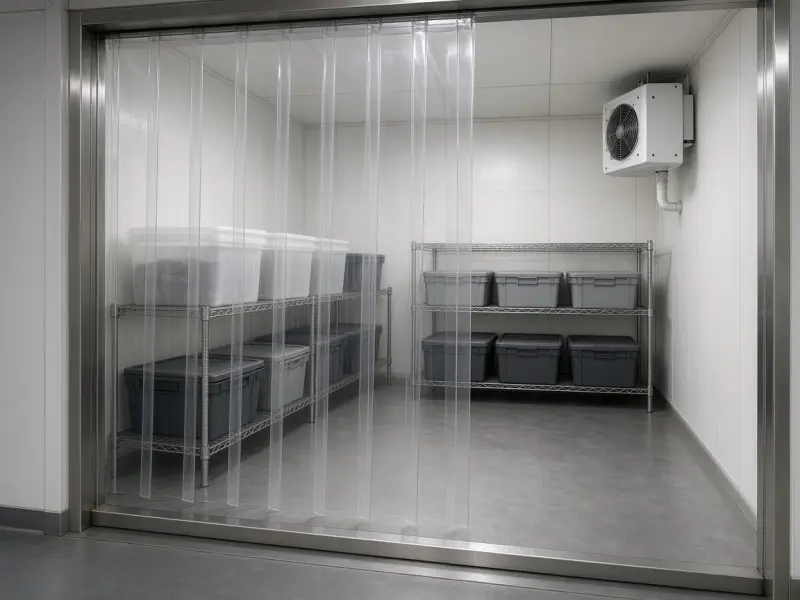

Commercial refrigeration engineers Lambeth - 24/7 emergency
Commercial Refrigeration Repair in Lambeth
Brixton, Vauxhall, Waterloo and Clapham edge kitchens. Call 0203 952 4822.
Local commercial refrigeration in Lambeth
Cold Direct attends commercial refrigeration plant in Lambeth around Brixton, Waterloo and Clapham. We are a North London commercial team, not a domestic network, so the van is packed for walk-in cold rooms, prep fridges, bottle coolers and cellar plant used by restaurants, pubs, hotels and shops. Sites we see most weeks include Brixton Market kitchens, Waterloo restaurants and Clapham pubs. Typical attendance is 50 to 85 minutes via Brixton Road and Waterloo, including nights and Sundays. Tell us the room or cabinet temperature, whether the fans are turning, and send a photo of the data plate if you can. We quote on site after we test the plant. If you run a second site in Brixton, we can often cover both on the same night when the diary allows. Call 07983 759320, 0800 112 3427 or 0203 952 4822. This page is only for Lambeth trade work, not a copy of another borough URL. Keep the three numbers on the duty board so night porters can reach the same diary that covers Brixton and Waterloo.
FAQs for Lambeth
How fast can you get to Lambeth?
We aim for 50 to 85 minutes for emergency commercial refrigeration in Lambeth, including evenings and Sundays. Give us the postcode near Brixton and the current temperature when you call 07983 759320.
Do you cover Brixton near Lambeth?
Yes. Brixton sits on the same North London diary as Lambeth. We cover that neighbour and the streets around Waterloo and Clapham on the same 24/7 rota.
Brixton, Vauxhall and Waterloo commercial refrigeration
Lambeth runs from Waterloo hotels to Brixton Market and the Vauxhall riverside. Travel from North London is longer than a Camden job when the river crossings are slow. We still take the call and we still give a time. We do not promise a 20-minute miracle from Enfield to SW9. Waterloo and South Bank hotels want documented night work.
What we repair in Lambeth
Cold Direct repairs commercial refrigeration for restaurants, pubs, bars, cafes, takeaways, hotels, staff canteens, convenience stores and production kitchens in Lambeth. Equipment includes walk-in cold rooms, freezer rooms, prep counters, upright fridges, chest and upright freezers, serve-over and multideck displays, bottle coolers, cellar coolers, commercial wine cabinets and ice machines. We provide both emergency repair and planned service. We do not invent a separate website for every keyword. Servicing is condenser cleaning, door furniture, probes and a diary so the EHO sees logs, not excuses.
Most commercial faults we see in Lambeth are the same handful: dirty condensers, failed evaporator fans, leaking door furniture, iced evaporators, weak compressors, and controllers that have lost their set point after a power dip. We diagnose on site, quote the repair before we start, and carry common Williams, Foster, Polar, Blizzard, Gram and Hoshizaki parts so first-visit fixes stay high. If a part has to be ordered, we tell you the lead time before you commit. If food is already at risk we say so before a long repair and talk through a temporary hold or a hired cabinet.
How a call-out in Lambeth works
You call 07983 759320, 0800 112 3427 or 0203 952 4822. You speak to someone who books refrigeration work every day. Give the site name, the postcode in SW8, SW9, SW2, SE11 and SE1 on the Waterloo side, the make if you can see the data plate, the last safe temperature reading, and whether the fans are still turning. We will tell you whether we can attend today. Typical attendance in inner North and central London is 60 to 90 minutes. Sites south of the river or on the westbound A40 take longer. We will not invent a miracle time. We will give you a booked slot. Use the mobile after hours, the freephone from a landline on the pass, and the London office for planned PPM.
On arrival we test air on and off the coil, check gaskets with a paper test, look at how stock is stacked against the evaporator, and inspect the condenser. Then we quote. Then we fix. We will not leave a room electrically unsafe. We will not ask staff to chip ice with a metal bar. Night work is standard for hospitality in Lambeth. Put all three numbers on the duty manager board with a link to https://www.colddirect.co.uk/contact for email and written cabinet lists.
Keywords this Lambeth page is built to win
Research on the live results for Cold Direct and commercial refrigeration London shows the brand already appears, but the commercial intent queries are won by dedicated area URLs: commercial refrigeration repair Lambeth, commercial fridge repair Lambeth, commercial refrigeration engineer Lambeth, emergency cold room repair Lambeth, cellar cooler repair Lambeth, and 24/7 catering refrigeration Lambeth. Directory pages and thin homepage mentions do not beat those URLs. This page uses British English, names Brixton, Vauxhall, Waterloo, Kennington, Stockwell and Clapham edge, and keeps every call-to-action on colddirect.co.uk.
Internal links stay on this domain: homepage, contact, commercial fridge repair, commercial freezer repair, and the cold room and cellar pages. Nearby cover includes Southwark, Wandsworth, Westminster and Chelsea. North London 25 mile radius still applies. Multi-site operators can book more than one address on the same night if the diary allows. If the chiller room is holding but the freezer is in alarm, say which room first.
Brands and areas in Lambeth
Williams, Foster, True, Hoshizaki, Polar, Blizzard, Gram, Lec, Snomaster, Tefcold and mixed pack systems. Ice machines include Hoshizaki and Scotsman. Send a photo of the data sticker if you want a parts check before travel. Areas covered: Brixton, Vauxhall, Waterloo, Kennington, Stockwell and Clapham edge. Postcodes SW8, SW9, SW2, SE11 and SE1 on the Waterloo side. Nearby Southwark, Wandsworth, Westminster and Chelsea.
Cold Direct remains commercial only. Restaurants, pubs, bars, cafes, hotels, shops, canteens and production kitchens in Lambeth are in scope. Domestic households are not. That focus is how we keep vans stocked for trade parts instead of washing-machine belts. If you searched for Cold Direct and commercial refrigeration London, you want the firm that already owns the domain and the phone numbers, not a directory listing on someone else's site. Send a WhatsApp photo of the model plate if you want a parts check before the van leaves.

Other London commercial refrigeration pages
Camden | Islington | Westminster | City | Hackney | Haringey | Kensington | Chelsea | Hammersmith | Southwark | Lambeth | Wandsworth | Tower Hamlets | Greenwich | Brent | Ealing | Richmond | Croydon | Newham | Hounslow
Book a commercial engineer in Lambeth
Call any number or use colddirect.co.uk/contact.